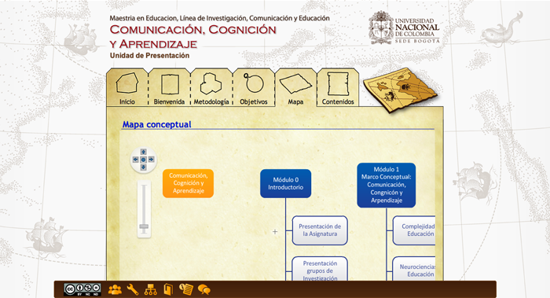

--- Projects ---
Comunicación, Cognición y Aprendizaje
This project constitutes a multimedia and non-linear navigation work that makes it possible to develop a narrative and generate a relationship between the subject of the course and the metaphor of travel in medieval times.
Pedagogical adaptation: Andres Henao.

Home Section

Navigation Instructions

Interactive content map viewer
Interactive content map viewer

Interactive to navigate between the course contents

Interviews with important people from the course

Content in text form